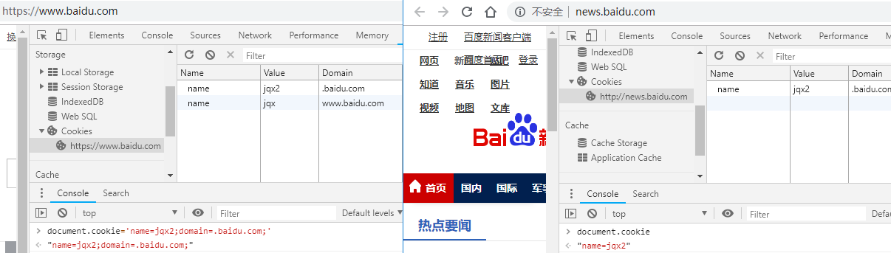
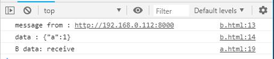
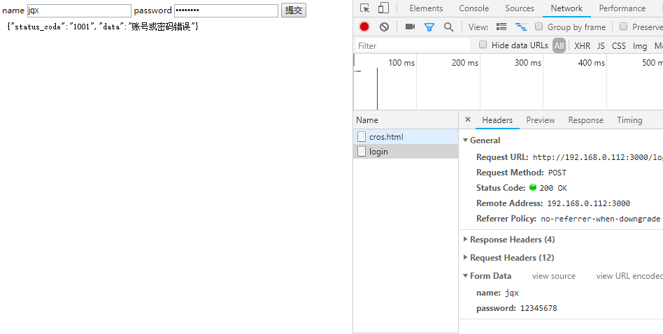

最近学习过程中，听到（还是看到）有人说，看懂了不是真的会。看懂了，记下来并能够把别人讲懂才是真的会。
看完之后感触颇深，决定将之后学习全部做一个记录，来检验自己是否理解细节。今天就从老生常谈的跨域方法开始。
1. img 标签跨域
并非 img 标签，所有的带属性 src 可以请求到不同源的资源，并且可以在url里面加上queryString向后台发送数据。
1 | // URL末尾带上了 ?name=jqx，传了name字段到后台 |
2. img 标签跨域
为什么第二个还是 img 标签跨域？是不是作者糊涂了？其实不然。
图片和 base64 之间可以相互转换，所以就有人往上面动歪脑筋了，想出了花里胡哨（sang xin bing kuang）的办法。将数据放在图片里面，前端拿到图片之后，利用 canvas 可以拿到图片的 base64 数据。
注意：跨域的图片想要利用 canvas 转成 base64 数据，需要在img和后台添加跨域支持（与 ajax 跨域类似）
1 | <img crossOrigin="anonymous" id="tulip" src="https://ss2.baidu.com/6ONYsjip0QIZ8tyhnq/it/u=489343535,3713603063&fm=58?name=jqx"/> |
3. jsonp 跨域
jsonp 跨域的道理与 img 方法有相同，也有不同的地方。
相同的地方是，利用 script 标签的 src 属性，将自己定义好的回调函数传给后台，与 img 一样发起一个 GET 请求。
不相同的是，img 标签拿到返回的数据之后会渲染图片，而 script 标签拿到返回数据之后，会运行返回的 js 代码，而代码的内容，就全权交由后台掌控了。
4. document.domain 跨 cookie
在跨域情况下，各个网页的 cookie 是无法共享的，但是如果两者的一级域名（至少是一级域名）相同的情况下，通过设置 cookie 的 domain 使得两个网页的 cookie 数据是可以共享的。
正常情况下的 cookie
设置了 domain 的cookie

1 | // www.baidu.com |
不过一般情况下，都会从后台来控住 cookie domain 值
1 | Set-Cookie: name=jqx; domain=.baidu.com |
5. 父子页面 location.hash
针对使用 iframe 或者 window.open 打开了不同源的网页，两者之间不能进行访问的情况。
在提前知道对方的url的情况下，父子页面可以相互修改 hash 值来进行传值。
1 | // iframe 打开子页面 |
6. 父子页面 window.name
window.name 属性，只要在用一窗口里，前一个网页设置了这个属性，后一个网页也可以读取他。
当父页面打开不同源的子页面，子页面可以将数据转成字符串存在 window.name 属性中，存完后再使用 location.herf 跳转到与父同源的页面，父页面就可以通过子页面的 window.name 属性拿到数据。
这种方法局限性很大，无法及时得知子页面的 name 的变化（无监听API），且子页面返回一次数据后页面就被销毁。
7. 父子页面 window.postMessage
H5 提供了新 postMessage API 来帮助不同源的父子页面进行更方便的交互。
1 | // iframe 打开子页面 |
输出

其中 postMessage 方法第一个参数代表需要传输的数据，第二个方法代表希望传输的目标源。
目标页面在 window 上绑定 message 事件后，待父页面发送数据触发页面。event 对象中有代表数据来源的 origin，代表数据的 data，代表来源 window 的 source。可以通过 source 通道反向传数据。
8. form表单跨域
form 表单的提交是没有跨域限制的，因为表单的提交之后没法在不同源的页面拿到返回的数据，所以浏览器认为这是相对安全的请求。
BTW，所有的跨域请求其实都返回了，只是浏览器限制了 js 获取响应，所以导致了跨域问题。
form 表单可以跨域提交，并且将返回的数据写入指定的 iframe 中，再利用 iframe 之间的资源共享方案（5，6，7），还是有办法拿到数据的。
1 | <form name="login" action="http://192.168.0.112:3000/login" method="POST" enctype="multipart/form-data" target="login-iframe"> |

9. CORS
主流的跨源资源分享解决方法。
使用 ajax 请求不同源页面资源，可以直接操作返回的数据，需要后台添加请求头。CORS MDN描述得非常详细。
需要注意的是，CORS 有简单请求和非简单请求之分，而非简单请求时，会先向后台发送一个 OPTION 请求，之前还碰到非简单请求的坑。猛戳博客
10. WebSocket
WebSocket 是一个新协议，实现了客户端和服务端之间的全双工、实时、并发交互数据。
因为是一个全新的协议，所以浏览器在请求数据的时候就已经跨域了。服务端能通过请求头里面的 origin 字段来判断浏览器是否在白名单。
以上全个人见解